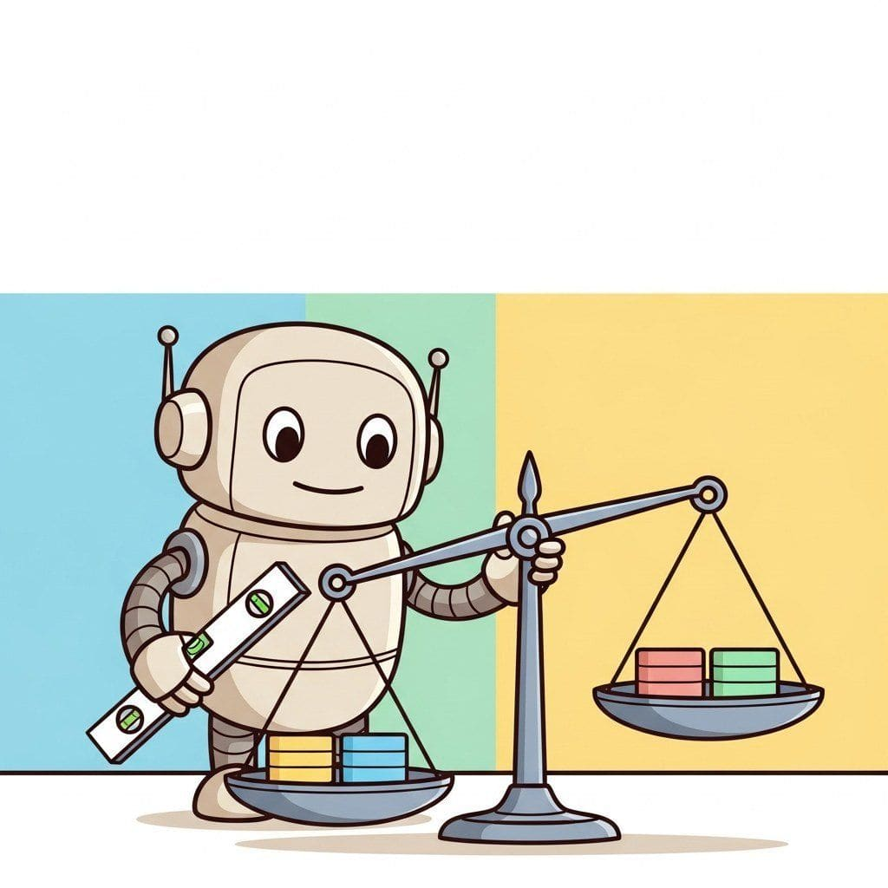

"Algorithmic bias is not a glitch in the system; it is a feature of every system built on data shaped by an unequal world."
Census, Fairness-Forward AI Agent
Part X kept the system safe. Part XI keeps it trustworthy. This chapter begins with bias, fairness, and hallucinations: the failure modes that erode user trust the fastest. Measurement, mitigation, and the tradeoffs between accuracy, calibration, and group-level outcomes.
Chapter Overview
Bias in LLM systems comes from data, from training procedures, and from the choices designers make about what counts as success. This chapter covers how to measure bias, where it comes from, and the mitigation patterns that move models toward fairer behavior across populations and languages. Pluralistic alignment, cross-cultural NLP, and the audit practices that catch disparate impact before deployment.
Two of the most common LLM trust failures: biased outputs and hallucinations. This chapter covers the algorithmic fairness frameworks (demographic parity, equalized odds), bias measurement and mitigation across pretraining and fine-tuning, plus why models hallucinate, the failure mode taxonomy, and the detection and prevention techniques that catch hallucinations before users see them.
- Explain demographic parity, equalized odds, and calibration as algorithmic-fairness frameworks for LLM outputs.
- Apply bias measurement protocols across pretraining, fine-tuning, and inference.
- Implement bias mitigation patterns at each layer of the LLM lifecycle.
- Evaluate cross-cultural and multilingual bias in LLM systems serving non-Western users.
- Design a pluralistic alignment strategy that accommodates competing value systems.
- Diagnose hallucinations across the failure-mode taxonomy and apply detection and prevention techniques.
Prerequisites
- Evaluation foundations from Chapter 42
- Specialized evaluation from Chapter 43
- Basic statistics (distributions, group means, hypothesis tests)
Sections
- 52.1 Bias, Fairness, and Ethics Demographic parity, equalized odds, calibration, and the algorithmic-fairness frameworks for LLM outputs. Intermediate
- 52.2 Cross-Cultural NLP and Pluralistic Alignment Cultural bias in LLMs, multilingual evaluation gaps, pluralistic alignment, culturally-aware evaluation, and mitigation strategies for non-Western users. Advanced
What's Next?
Next: Chapter 53: Regulation, Compliance, and Governance. Once bias and hallucinations are measurable, the question becomes which laws and frameworks impose what duties on the team that ships the model. Chapter 53 walks the EU AI Act, GDPR, US executive orders, NIST AI RMF, ISO 42001, and the enterprise governance practices that turn ethical principles into auditable controls.